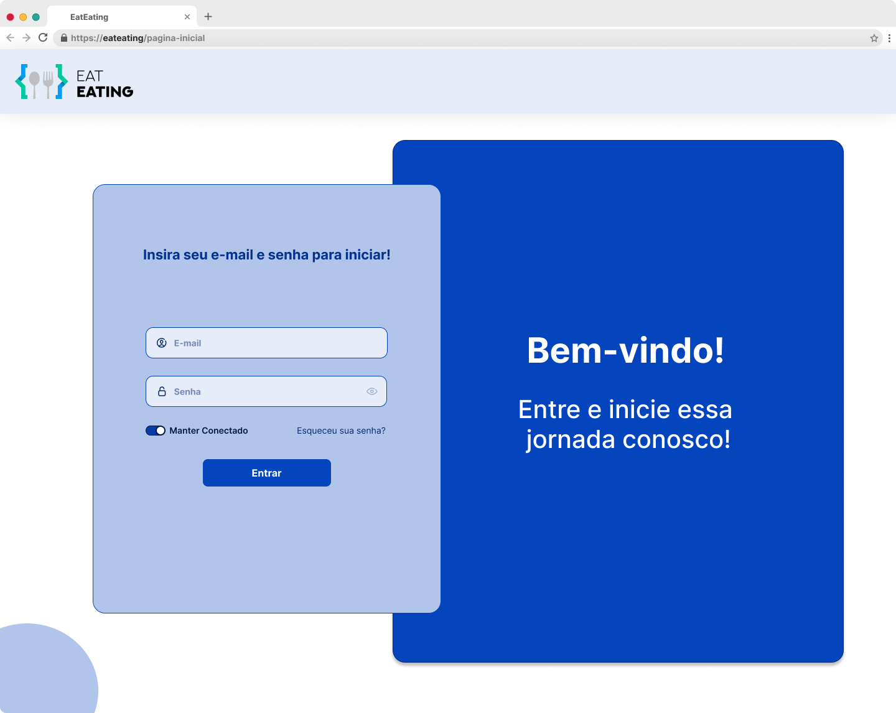
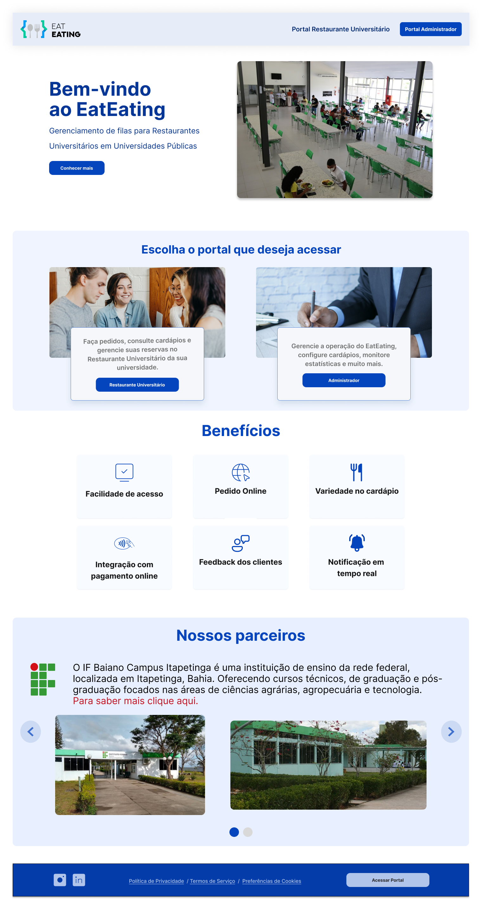
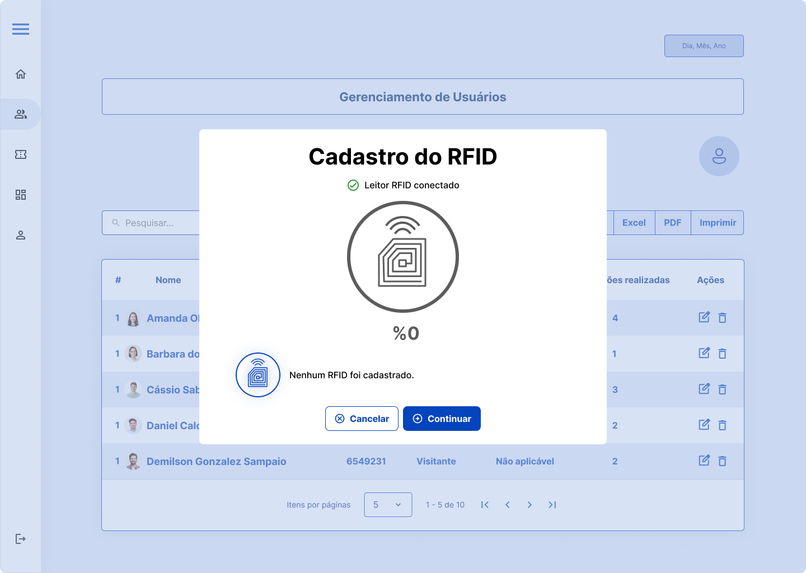
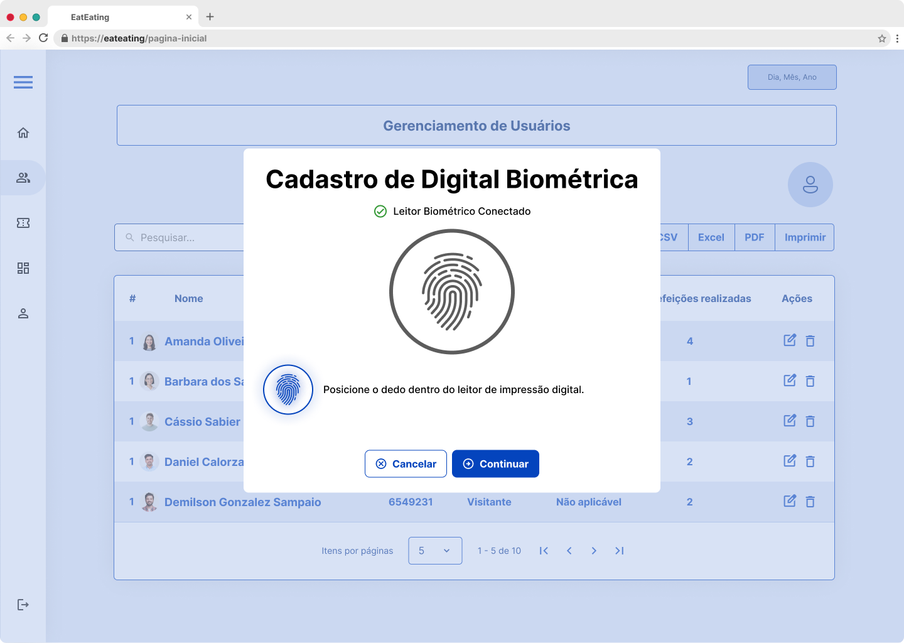

EatEating
Sistema para controle de entrada e saída de refeitórios universitários

Sobre
O EatEating é uma plataforma da startup LabsIF para automação e controle de demanda em restaurantes universitários.
Atuei inicialmente como Scrum Master e Product Owner, mas assumi o design do produto durante uma fase crítica, transformando um desafio operacional em minha transição oficial para o Product Design.
O projeto foca em escalabilidade e previsibilidade para restaurantes universitários.
Status: Atualmente, o projeto encontra-se pausado, mas permanece como um marco fundamental na minha evolução profissional.

Desafio
Diante de uma redução crítica na equipe de design, precisei assumir a execução técnica de UI/UX de forma autodidata enquanto acumulava as funções de PO e Scrum Master. O objetivo era garantir a continuidade da plataforma e o cumprimento dos prazos da startup.
Solução
Liderei a transição estratégica da gestão para o Product Design, entregando interfaces de alta fidelidade que traduziram regras de negócio complexas em uma experiência intuitiva, mantendo o fluxo de trabalho estável através de metodologias ágeis.
Processo de design
1. Gestão Ágil:
Implementação de Scrum e priorização de backlog como Product Owner.
2. Imersão em UX:
Estudo intensivo e prático para suprir a lacuna da equipe de design.
3. Prototipagem:
Evolução independente da interface para alta fidelidade no Figma.
4. Handoff:
Entrega de um produto escalável e alinhado aos padrões visuais da LabsIF.
Protótipos de alta fidelidade
Interfaces do portal dos administradores




Interface do portal dos alunos


Mais para explorar

Recicla-ITA
Conectando cidadãos e catadores para otimizar a logística de resíduos recicláveis. Com interfaces intuitivas para os catadores e um dashboard administrativo completo para a Defensoria Pública e cooperativas.

Doe+
Conectando doadores e instituições através de uma rede de solidariedade digital segura e intuitiva
Gostou deste projeto?
Vamos conversar sobre como posso ajudar no seu próximo projeto!
Entre em contato